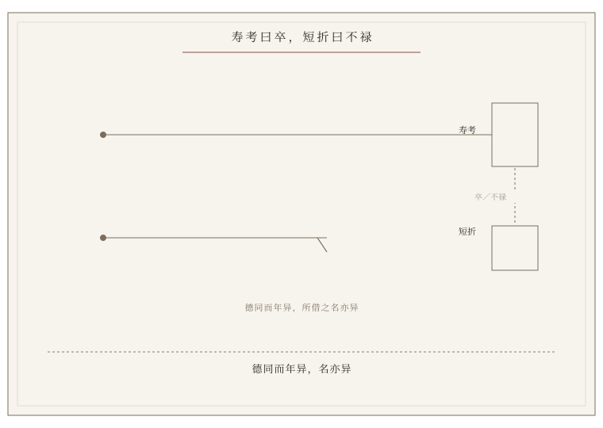

曲礼下 · 二·七十五 · 第 198 课
寿考曰卒，短折曰不禄。注「禄谓有德行任为大夫、士而不为者，老而死，从大夫之称，少而死，从士之称」。
说什么事：有德而未仕者之死，按其寿之长短，借用大夫、士之称。
落在哪一层：礼，兼及礼意。论名之及于未成之位。
为何编在此位：上节论生死异称，此节论无位者亦有其称。称不专属有爵之人。
【经】壽考曰「卒」，短折曰「不祿」。
【注】祿謂有德行任為大夫、士而不為者，老而死，從大夫之稱，少而死，從士之稱。
【疏】此并是有德未经仕而死者之称也。寿考，老也；短折，少也。若有德不仕老而死者，从大夫之称，故曰卒也；若少而死者，则从士之称，故曰不禄。郑知「有德行任为大夫、士而不为者」，若实是大夫、士，前文已显；今更别云卒与不禄，同大夫、士之称，故知堪为大夫、士而不为者。《檀弓》云「君子曰终，小人曰死」，与此不同者，此据年之老者从大夫之称、少者从士之称；《檀弓》不据年之老少，但据君子取终其成功、小人精神尽澌，与此别也。
寿考 老。考，成也。
短折 少而死。折，夭折。
任 堪任。堪为大夫、士。
从某之称 借用其称，非真其位。
年老而有德者之死称「卒」，年少而死者称「不禄」。
此节补上一个空缺：有德而无位的人，死后叫什么。礼的答法是——借。老则借大夫之「卒」，少则借士之「不禄」。
第一层 前文已显 疏「若实是大夫、士，前文已显」。上一节已给有爵者定了名，此节所补的，正是没有爵位的那一批人。
第二层 德可代位 注「有德行任为大夫、士而不为者」。堪任而不任，礼仍以大夫士之名称之。位可缺，德不可没。
第三层 老少定其所借 老借大夫，少借士。所借高低不看其人之德几何，只看其寿几何。这是一条很硬的界线：德同而年异，名亦异。
第四层 与《檀弓》分途 疏辨《檀弓》「君子曰终，小人曰死」与此不同：彼以德分，此以年分。两书各立一义，不可互掩。
与今日何干 「英年早逝」与「享年九十」，同一个人的死，社会给的词不一样。礼早就把年龄写进了名里。
| 左 | 右 |
|---|---|
| 寿考曰卒 | 老而死，从大夫之称 |
| 短折曰不禄 | 少而死，从士之称 |
| 有德行任为大夫士 | 而不为者 |
| 位可缺 | 德不可没 |
| 老借大夫 | 少借士 |
| 《檀弓》以德分 | 此经以年分 |
画两道自同一左端竖线起算的横线：上一道长而平，下一道短且末端向下折一小段（示「短折」）。两道线之右各接一枚方牌，上牌高、下牌矮；两牌之间画一道竖直的虚线，线中段开一断口。上图之外，另在两道横线起点处各点一枚小圆。不写文字、不画人。赭色只用在下一道横线末端的折角。
